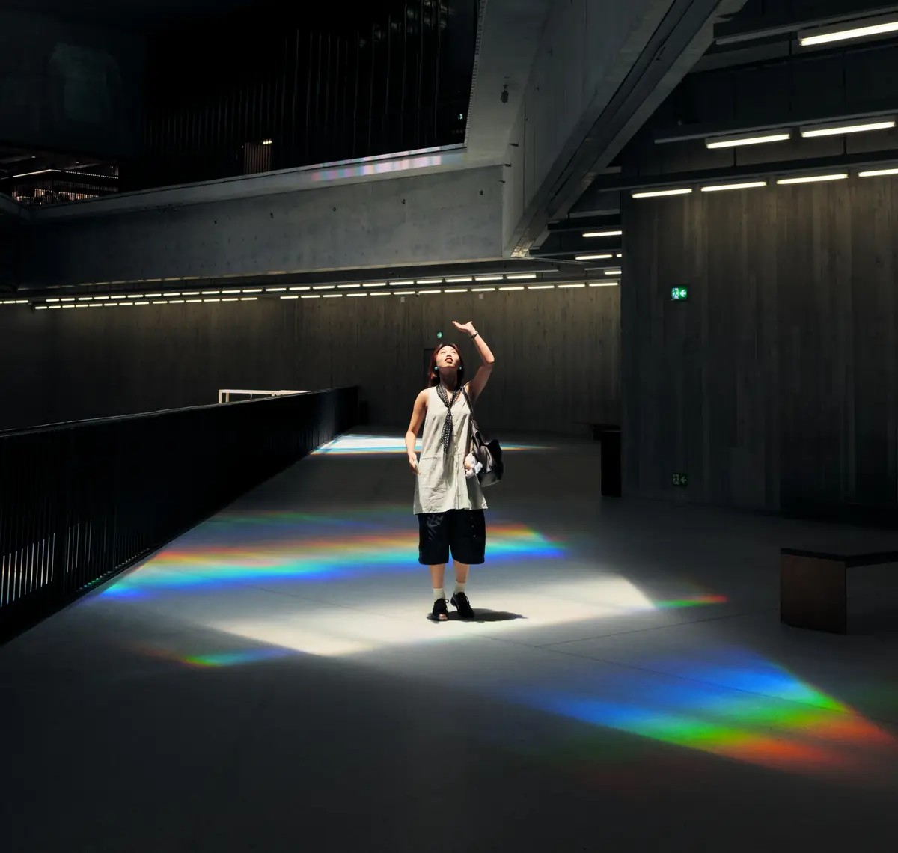

Innova sin renunciar a tus valores.
Ayudo a quienes dirigen museos y empresas turísticas a ver más allá del ruido en torno a la IA y a tomar decisiones en las que su público pueda confiar.
- Talleres de estrategia
- Estudios de público
- Gobernanza de la IA
- Formación de equipos
¿A quién va dirigido?
Instituciones culturales
GLAM: galerías, bibliotecas, archivos y museos
Claridad estratégica mientras tu institución evoluciona
Yo aporto la evidencia; tú decides con conocimiento de causa. Juntos abordaremos dilemas complejos sobre la IA de cara al público, la programación, la captación de fondos y la transformación digital.
Ver talleres y entregables →
Foto: Cai Fang / Unsplash, en M+, Hong Kong
Marcas de turismo y viajes
La confianza del huésped en el espacio phygital
Conocimiento cultural para una mejor experiencia del huésped
Los viajeros detectan enseguida los valores de fachada. Reforzaremos su confianza tomando las decisiones correctas sobre herramientas de IA, gobernanza de datos y selección de proveedores en todo tu ecosistema digital y tu cadena de servicios.
Ver proyectos y entregables →Foto: Tatjana Petkevica / Unsplash, Pink Street, Lisboa
¿Por qué confiar en mí?
Antropóloga de formación
Estudios de público basados en evidencia
Titulada por la Universidad de Edimburgo y la Universidad de Boston.
Experiencia en patronatos
Años al timón, no solo asesorando desde fuera
11 años en total en patronatos y juntas directivas de organizaciones culturales.
Directora de marketing en empresas de IA
He vendido lo que ahora te ayudo a gobernar
Más de 10 años en software de IA. Profesional certificada en gobernanza de la IA por la IAPP (AIGP).
“I can’t speak highly enough about the level of care, thoughtfulness, and strategic vision she brings to both the micro details of daily execution and the macro direction for long-term growth. She’s a creative problem solver with strategic clarity and the added bonus of being lovely to work with.”
“Anne is one of those people you always remember for how she made you feel. She is truly authentic in the way she connects with other humans. Her passion to create meaningful and lasting memories in every interaction is not overdone; it’s baked into who she is.”
Lee todas las recomendaciones en LinkedIn (en inglés) (se abre en una pestaña nueva)
Artículos
Todos los artículos (en inglés) →Proyectos destacados
Newsletter
Si no te sirve, no te lo envío.
Envíos ocasionales sobre IA responsable, cultura y políticas públicas (en inglés).
Suscríbete en Substack (se abre en una pestaña nueva)Hablemos
Avanza esta misma semana
Ofrezco consultas gratuitas de 30 minutos a patronatos y equipos directivos, en inglés (entiendo español y portugués).
Reserva una llamada (se abre en una pestaña nueva)